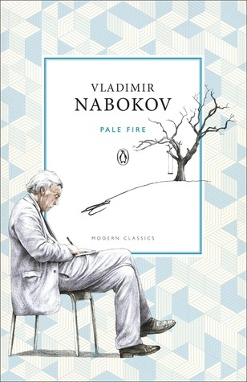

BOOK 20

"Pale Fire" by Vladimir Nabokov
Timon of Athens is one of Shakespeare’s less well-known and less-read plays, so it’s not often quoted.
But Timon’s speech here in Act IV Scene III is an excellent one. Suitably for a 1962 postmodernist
novel full of cross-quotations and complex footnotes, there’s also a possible secondary
Shakespeare reference here. In Hamlet, the Ghost states that the glow-worm ‘gins to pale his
uneffectual fire.’ Lolita (1955) is of course Nabokov’s best work and one of history’s most famous book
titles, but Pale Fire also received acclaim.